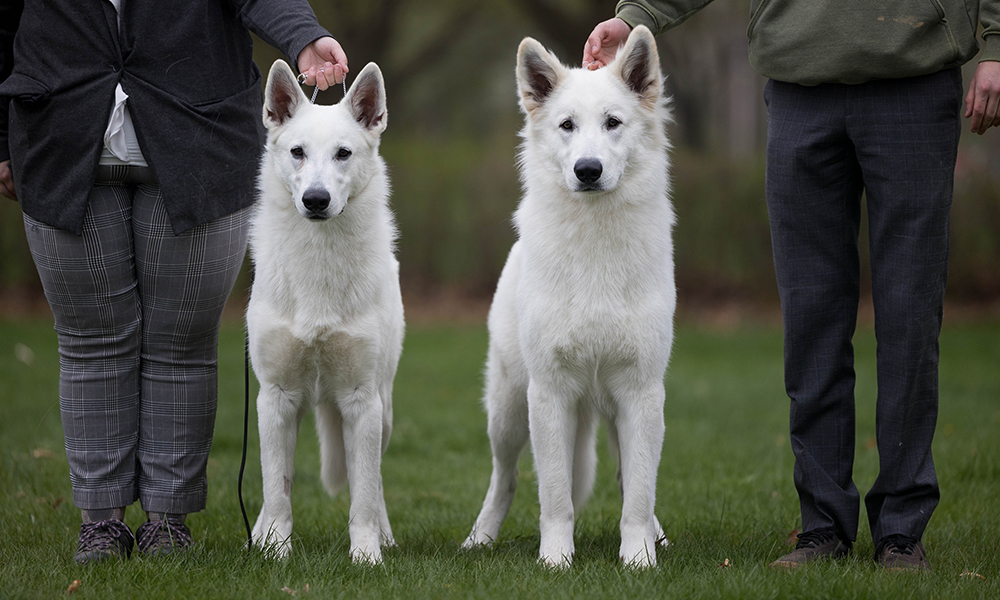

WSGP is, at it's heart, a Genetics Project. As such, our aim is to improve the White Shepherd breed via our open registry, data collection, and sharing of all available resources to educate breeders and owners alike. We have compiled a list of projects and articles to the left for your review. All of this information is given for free, but we hope you consider donating to support us. Our organization requires donations to survive and to continue improving the White Shepherd breed.
